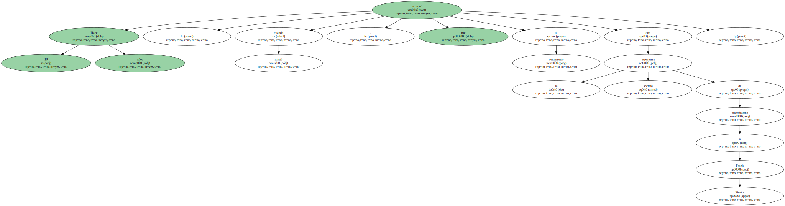
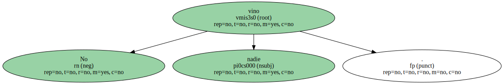
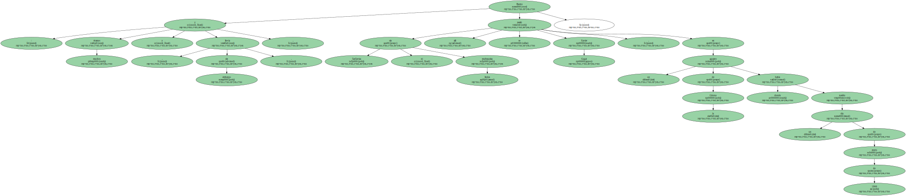
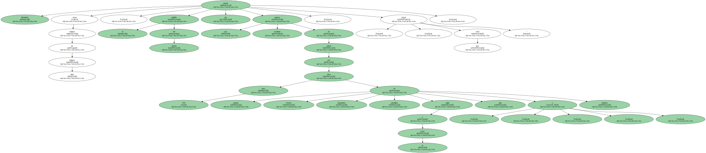
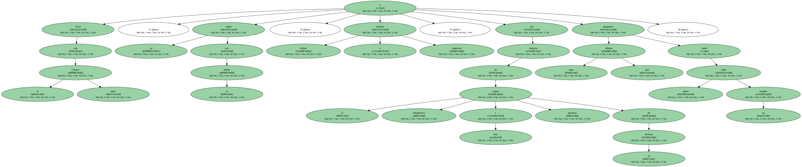
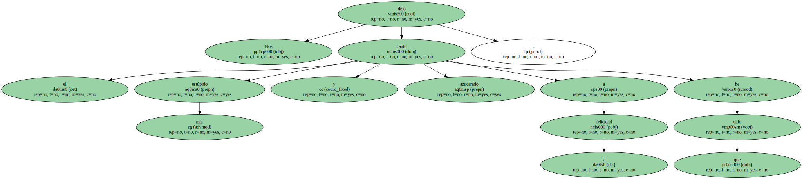
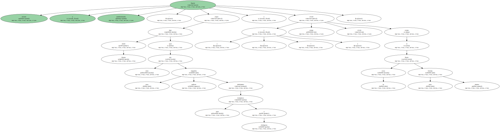
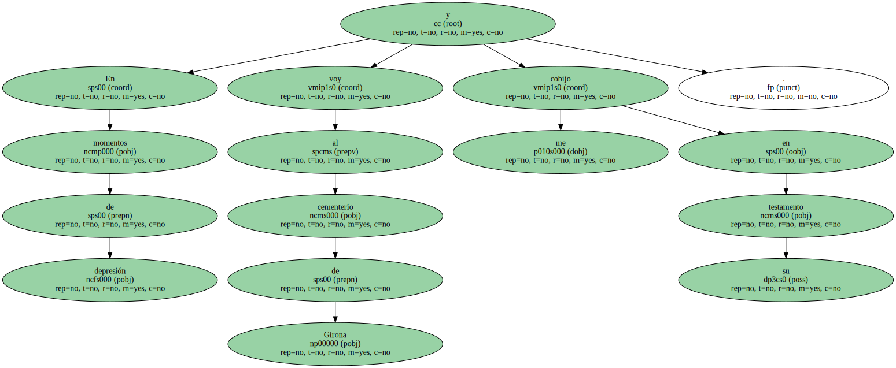
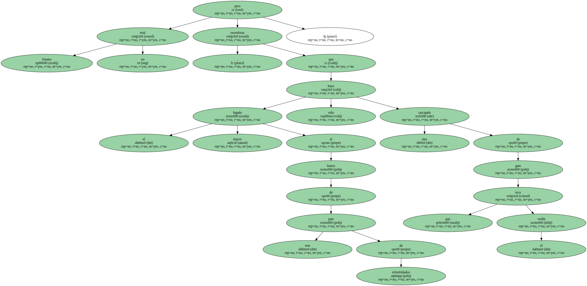

Hace 10 años , cuando murió , me acerqué al cementerio con la esperanza secreta de encontrarme a Frank Sinatra.
No vino nadie.
Bueno : éramos muchos y , sin embargo , llovía , y sin fanfarrias ni muñequitas lindas allí se metió Xavier Cugat , en un agujero de la Girona donde había nacido un día de enero de 1900.
Rodeados como estamos de tanto balance , el epitafio del músico me parece una excelente manera de acabar con estos 100 años de muerte , foxtrot , desolación , penicilina , viajes a la Luna , sida e Internet : " Cugat , que vivió ".
Fue un vivales.

Tocó con el gran Caruso , se codeó con la Mafia , inventó ritmos y orquestas , fue maestro de la sirena más inexpresiva y pelmaza de la historia y garabateó unos dibujos naíf como quien silba un mambo.
Nos dejó el canto más estúpido y azucarado a la felicidad que he oído.
Nació pícaro y predestinado : supo leer entre líneas que esto era una señora tragedia que debíamos tomarnos a chirigota y vivió ( ¡ y cómo vivió ! ) como si la cosa fuera una eterna broma.
En momentos de depresión voy al cementerio de Girona y me cobijo en su testamento.
Sinatra no está , pero reconforta que el mayor legado al futuro de este país de refunfuñados haya sido una carcajada de gato que toca el violín.
